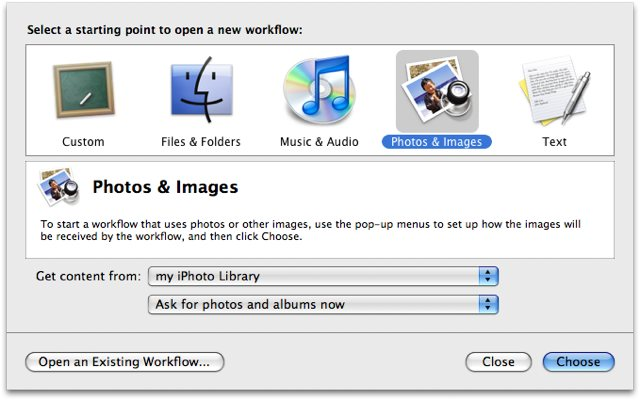
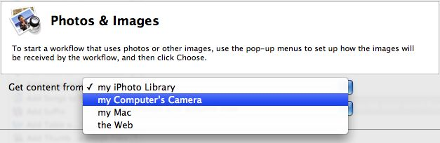
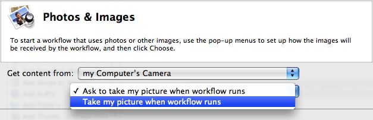
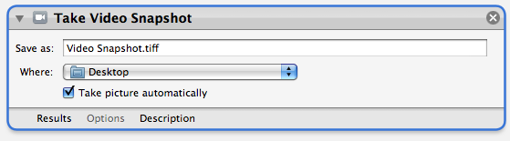

Tutorial 01: The Starting Points Dialog
The Starting Points dialog is designed to assist you in determining the initial action for your workflow.
At the top of the dialog are five icons representing the various categories of information commanly processed by workflows. Since this workflow deals with creating a photo of yourself to add to an outgoing Mail message, click the fourth icon labeled Photos & Images.

Notice that there are two popup menus located below the Starting Points category description. Click the first popup menu to indicate the source of the image used by this workflow. In this case, the source will be the computer’s camera, so choose my Computer’s Camera from the popup menu.

The setting of the second popup menu will determine how the picture will be taken by the camera. There are options to automatically take the snapshot, or have the taking of the snapshot controlled manually. To make the workfloiw run as seamless as possible, choose Take my picture when workflow runs from the popup menu.

With the menu options set, click the Choose button and the approriate Automator action will automatically be added to the workflow area of the window.

The controls for any setable parameters will be displayed in the Action View. From the destination popup menu, labeled “Where:” select the Pictures folder as the place to put the snapshot images taken by the workflow.
You’ now completed the adding of the first action to the workflow. Continue to the next page to learn how to add the next action to the workflow.